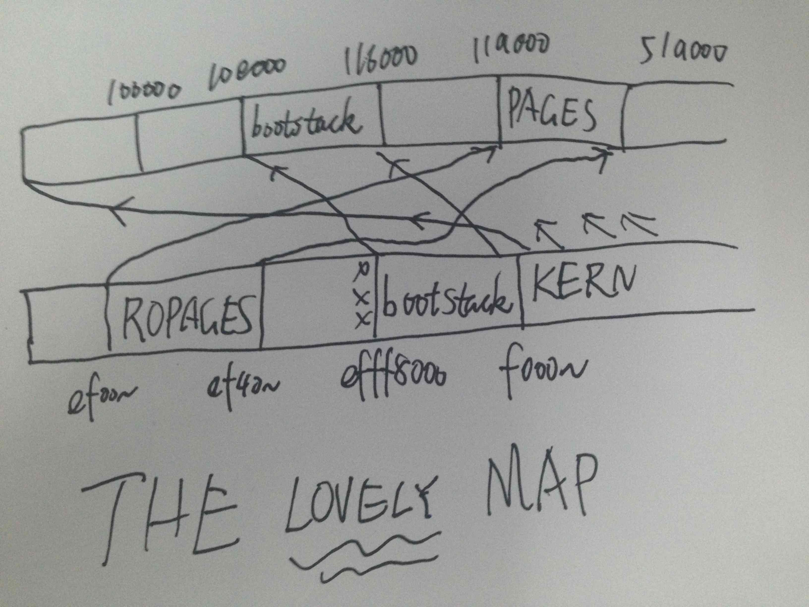

All exercises finished,
One challenge completed.
running JOS: (4.4s)
Physical page allocator: OK
Page management: OK
Kernel page directory: OK
Page management 2: OK
Score: 70/70
Exercise 1. In the file kern/pmap.c, you must implement code for the following functions (probably in the order given).
boot_alloc()
mem_init() (only up to the call to check_page_free_list(1))
page_init()
page_alloc()
page_free()
check_page_free_list() and check_page_alloc() test your physical page allocator. You should boot JOS and see whether check_page_alloc() reports success. Fix your code so that it passes. You may find it helpful to add your own assert()s to verify that your assumptions are correct.
boot_alloc:
// ROUNDUP to make sure nextfree is kept aligned
// to a multiple of PGSIZE
cprintf("boot_alloc memory at %x\n", nextfree);
cprintf("Next memory at %x\n", ROUNDUP((char *) (nextfree+n), PGSIZE));
if (n != 0) {
char *next = nextfree;
nextfree = ROUNDUP((char *) (nextfree+n), PGSIZE);
return next;
} else return nextfree;
page_init:
Q: Then extended memory [EXTPHYSMEM, ...). Some of it is in use, some is free. Where is the kernel in physical memory? Which pages are already in use for page tables and other data structures?
Memory after (int)ROUNDUP(((char*)pages) + (sizeof(struct PageInfo) * npages) - 0xf0000000, PGSIZE)/PGSIZE; is free.
void
page_init(void)
{
size_t i;
for (i = 1; i < npages_basemem; i++) {
pages[i].pp_ref = 0;
pages[i].pp_link = page_free_list;
page_free_list = &pages[i];
}
int med = (int)ROUNDUP(((char*)pages) + (sizeof(struct PageInfo) * npages) - 0xf0000000, PGSIZE)/PGSIZE;
cprintf("%d\n", ((char*)pages) + (sizeof(struct PageInfo) * npages));
cprintf("med=%d\n", med);
for (i = med; i < npages; i++) {
pages[i].pp_ref = 0;
pages[i].pp_link = page_free_list;
page_free_list = &pages[i];
}
}
page_alloc:
struct PageInfo *
page_alloc(int alloc_flags)
{
if (page_free_list) {
struct PageInfo *ret = page_free_list;
page_free_list = page_free_list->pp_link;
if (alloc_flags & ALLOC_ZERO)
memset(page2kva(ret), 0, PGSIZE);
return ret;
}
return NULL;
}
page_free:
void
page_free(struct PageInfo *pp)
{
pp->pp_link = page_free_list;
page_free_list = pp;
}
$ make qemu-nox
6828 decimal is 15254 octal!
Physical memory: 66556K available, base = 640K, extended = 65532K
boot_alloc memory at f0116000
Next memory at f0117000
boot_alloc memory at f0117000
Next memory at f0138000
npages: 16639
npages_basemem: 160
pages: f0117000
-267159560
med=312
boot_alloc memory at f0138000
Next memory at f0138000
check_page_free_list done
check_page_alloc() succeeded!
Question:
Assuming that the following JOS kernel code is correct, what type should variable x have, uintptr_t or physaddr_t?
mystery_t x;
char* value = return_a_pointer();
*value = 10;
x = (mystery_t) value;
Answer: uintptr_t, because va is used in applications.
The following code in pmap.c is very informative:
static physaddr_t
check_va2pa(pde_t *pgdir, uintptr_t va)
{
pte_t *p;
pgdir = &pgdir[PDX(va)];
if (!(*pgdir & PTE_P))
return ~0;
p = (pte_t*) KADDR(PTE_ADDR(*pgdir));
if (!(p[PTX(va)] & PTE_P))
return ~0;
return PTE_ADDR(p[PTX(va)]);
}
In the file kern/pmap.c, you must implement code for the following functions.
pgdir_walk()
boot_map_region()
page_lookup()
page_remove()
page_insert()
check_page(), called from mem_init(), tests your page table management routines. You should make sure it reports success before proceeding.
pgdr_walk, the comments is between codes:
pte_t *
pgdir_walk(pde_t *pgdir, const void *va, int create)
{
int dindex = PDX(va), tindex = PTX(va);
//dir index, table index
if (!(pgdir[dindex] & PTE_P)) { //if pde not exist
if (create) {
struct PageInfo *pg = page_alloc(ALLOC_ZERO); //alloc a zero page
if (!pg) return NULL; //allocation fails
pg->pp_ref++;
pgdir[dindex] = page2pa(pg) | PTE_P | PTE_U | PTE_W;
//we should use PTE_U and PTE_W to pass checkings
} else return NULL;
}
pte_t *p = KADDR(PTE_ADDR(pgdir[dindex]));
//THESE CODE COMMENTED IS NOT NEEDED
// if (!(p[tindex] & PTE_P)) //if pte not exist
// if (create) {
// struct PageInfo *pg = page_alloc(ALLOC_ZERO); //alloc a zero page
// pg->pp_ref++;
// p[tindex] = page2pa(pg) | PTE_P;
// } else return NULL;
return p+tindex;
}
boot_map_region, the comments is between codes:
static void
boot_map_region(pde_t *pgdir, uintptr_t va, size_t size, physaddr_t pa, int perm)
{
int i;
for (i = 0; i < size/PGSIZE; ++i, va += PGSIZE, pa += PGSIZE) {
pte_t *pte = pgdir_walk(pgdir, (void *) va, 1); //create
if (!pte) panic("boot_map_region panic, out of memory");
*pte = pa | perm | PTE_P;
}
}
page_lookup, the comments is between codes:
struct PageInfo *
page_lookup(pde_t *pgdir, void *va, pte_t **pte_store)
{
pte_t *pte = pgdir_walk(pgdir, va, 0); //not create
if (!pte || !(*pte & PTE_P)) return NULL; //page not found
if (pte_store)
*pte_store = pte; //found and set
return pa2page(PTE_ADDR(*pte));
}
page_remove, the comments is between codes:
void
page_remove(pde_t *pgdir, void *va)
{
pte_t *pte;
struct PageInfo *pg = page_lookup(pgdir, va, &pte);
if (!pg || !(*pte & PTE_P)) return; //page not exist
// - The ref count on the physical page should decrement.
// - The physical page should be freed if the refcount reaches 0.
page_decref(pg);
// - The pg table entry corresponding to 'va' should be set to 0.
*pte = 0;
// - The TLB must be invalidated if you remove an entry from
// the page table.
tlb_invalidate(pgdir, va);
}
page_insert, be aware of how corner-case is avoided, the comments is between codes:
int
page_insert(pde_t *pgdir, struct PageInfo *pp, void *va, int perm)
{
pte_t *pte = pgdir_walk(pgdir, va, 1); //create on demand
if (!pte) //page table not allocated
return -E_NO_MEM;
//increase ref count beforehand to avoid the corner case that pp is freed before it is inserted.
pp->pp_ref++;
if (*pte & PTE_P) //page colides, tle is invalidated in page_remove
page_remove(pgdir, va);
*pte = page2pa(pp) | perm | PTE_P;
return 0;
}
Fill in the missing code in mem_init() after the call to check_page().
UPAGES:
boot_map_region(kern_pgdir,
UPAGES,
PTSIZE,
PADDR(pages),
PTE_U);
BOOTSTACK:
boot_map_region(kern_pgdir,
KSTACKTOP-KSTKSIZE,
KSTKSIZE,
PADDR(bootstack),
PTE_W);
KERNBASE, be aware that -KERNBASE is 0x10000000 positive:
boot_map_region(kern_pgdir,
KERNBASE,
-KERNBASE,
0,
PTE_W);
What entries (rows) in the page directory have been filled in at this point? What addresses do they map and where do they point?
Here's my answer: 
We have placed the kernel and user environment in the same address space. Why will user programs not be able to read or write the kernel's memory? What specific mechanisms protect the kernel memory?
Because PTE_U is not enabled.
What is the maximum amount of physical memory that this operating system can support? Why?
2G, becuase the maximum size of UPAGES is 4MB, sizeof(struct PageInfo))=8Byte,
so we can have at most 4MB/8B=512K pages,
the size of one page is 4KB, so we can have at most 4MB/8B*4KB)=2GB physical memory.
How much space overhead is there for managing memory, if we actually had the maximum amount of physical memory? How is this overhead broken down?
We need 4MB PageInfos to manage memory plus 2MB for Page Table
plus 4KB for Page Directory if we have 2GB physical memory.
Total:6MB+4KB
Revisit the page table setup in kern/entry.S and kern/entrypgdir.c. Immediately after we turn on paging, EIP is still a low number (a little over 1MB). At what point do we transition to running at an EIP above KERNBASE? What makes it possible for us to continue executing at a low EIP between when we enable paging and when we begin running at an EIP above KERNBASE? Why is this transition necessary?
After jmp *%eax finished. It is possible because entry_pgdir also maps va [0, 4M) to pa [0, 4M), it's necessary because later a kern_pgdir will be loaded and va [0, 4M) will be abandoned.
Challenge! We consumed many physical pages to hold the page tables for the KERNBASE mapping. Do a more space-efficient job using the PTE_PS ("Page Size") bit in the page directory entries. This bit was not supported in the original 80386, but is supported on more recent x86 processors. You will therefore have to refer to Volume 3 of the current Intel manuals. Make sure you design the kernel to use this optimization only on processors that support it!
Ouch! It is too difficult to me to reimplement the kernel...
Challenge! Extend the JOS kernel monitor with commands to:
Display in a useful and easy-to-read format all of the physical page mappings (or lack thereof) that apply to a particular range of virtual/linear addresses in the currently active address space. For example, you might enter 'showmappings 0x3000 0x5000' to display the physical page mappings and corresponding permission bits that apply to the pages at virtual addresses 0x3000, 0x4000, and 0x5000.
Explicitly set, clear, or change the permissions of any mapping in the current address space.
Dump the contents of a range of memory given either a virtual or physical address range. Be sure the dump code behaves correctly when the range extends across page boundaries!
Do anything else that you think might be useful later for debugging the kernel. (There's a good chance it will be!)
First, I need a function to translate string to address:
uint32_t xtoi(char* buf) {
uint32_t res = 0;
buf += 2; //0x...
while (*buf) {
if (*buf >= 'a') *buf = *buf-'a'+'0'+10;//aha
res = res*16 + *buf - '0';
++buf;
}
return res;
}
and a function that beautifully prints pte_t:
void pprint(pte_t *pte) {
cprintf("PTE_P: %x, PTE_W: %x, PTE_U: %x\n",
*pte&PTE_P, *pte&PTE_W, *pte&PTE_U);
}
Here's my showmappings:
int
showmappings(int argc, char **argv, struct Trapframe *tf)
{
if (argc == 1) {
cprintf("Usage: showmappings 0xbegin_addr 0xend_addr\n");
return 0;
}
uint32_t begin = xtoi(argv[1]), end = xtoi(argv[2]);
cprintf("begin: %x, end: %x\n", begin, end);
for (; begin <= end; begin += PGSIZE) {
pte_t *pte = pgdir_walk(kern_pgdir, (void *) begin, 1); //create
if (!pte) panic("boot_map_region panic, out of memory");
if (*pte & PTE_P) {
cprintf("page %x with ", begin);
pprint(pte);
} else cprintf("page not exist: %x\n", begin);
}
return 0;
}
K> showmappings
Usage: showmappings 0xbegin_addr 0xend_addr
K> showmappings 0xf011a000 0xf012a000
begin: f011a000, end: f012a000
page f011a000 with PTE_P: 1, PTE_W: 2, PTE_U: 0
page f011b000 with PTE_P: 1, PTE_W: 2, PTE_U: 0
page f011c000 with PTE_P: 1, PTE_W: 2, PTE_U: 0
page f011d000 with PTE_P: 1, PTE_W: 2, PTE_U: 0
page f011e000 with PTE_P: 1, PTE_W: 2, PTE_U: 0
page f011f000 with PTE_P: 1, PTE_W: 2, PTE_U: 0
page f0120000 with PTE_P: 1, PTE_W: 2, PTE_U: 0
page f0121000 with PTE_P: 1, PTE_W: 2, PTE_U: 0
page f0122000 with PTE_P: 1, PTE_W: 2, PTE_U: 0
page f0123000 with PTE_P: 1, PTE_W: 2, PTE_U: 0
page f0124000 with PTE_P: 1, PTE_W: 2, PTE_U: 0
page f0125000 with PTE_P: 1, PTE_W: 2, PTE_U: 0
page f0126000 with PTE_P: 1, PTE_W: 2, PTE_U: 0
page f0127000 with PTE_P: 1, PTE_W: 2, PTE_U: 0
page f0128000 with PTE_P: 1, PTE_W: 2, PTE_U: 0
page f0129000 with PTE_P: 1, PTE_W: 2, PTE_U: 0
page f012a000 with PTE_P: 1, PTE_W: 2, PTE_U: 0
K> showmappings 0xef000000 0xef010000
begin: ef000000, end: ef010000
page ef000000 with PTE_P: 1, PTE_W: 0, PTE_U: 4
page ef001000 with PTE_P: 1, PTE_W: 0, PTE_U: 4
page ef002000 with PTE_P: 1, PTE_W: 0, PTE_U: 4
page ef003000 with PTE_P: 1, PTE_W: 0, PTE_U: 4
page ef004000 with PTE_P: 1, PTE_W: 0, PTE_U: 4
page ef005000 with PTE_P: 1, PTE_W: 0, PTE_U: 4
page ef006000 with PTE_P: 1, PTE_W: 0, PTE_U: 4
page ef007000 with PTE_P: 1, PTE_W: 0, PTE_U: 4
page ef008000 with PTE_P: 1, PTE_W: 0, PTE_U: 4
page ef009000 with PTE_P: 1, PTE_W: 0, PTE_U: 4
page ef00a000 with PTE_P: 1, PTE_W: 0, PTE_U: 4
page ef00b000 with PTE_P: 1, PTE_W: 0, PTE_U: 4
page ef00c000 with PTE_P: 1, PTE_W: 0, PTE_U: 4
page ef00d000 with PTE_P: 1, PTE_W: 0, PTE_U: 4
page ef00e000 with PTE_P: 1, PTE_W: 0, PTE_U: 4
page ef00f000 with PTE_P: 1, PTE_W: 0, PTE_U: 4
page ef010000 with PTE_P: 1, PTE_W: 0, PTE_U: 4
K>
Here's my setm that can set or clear a flag in a specific page:
int setm(int argc, char **argv, struct Trapframe *tf) {
if (argc == 1) {
cprintf("Usage: setm 0xaddr [0|1 :clear or set] [P|W|U]\n");
return 0;
}
uint32_t addr = xtoi(argv[1]);
pte_t *pte = pgdir_walk(kern_pgdir, (void *)addr, 1);
cprintf("%x before setm: ", addr);
pprint(pte);
uint32_t perm = 0;
if (argv[3][0] == 'P') perm = PTE_P;
if (argv[3][0] == 'W') perm = PTE_W;
if (argv[3][0] == 'U') perm = PTE_U;
if (argv[2][0] == '0') //clear
*pte = *pte & ~perm;
else //set
*pte = *pte | perm;
cprintf("%x after setm: ", addr);
pprint(pte);
return 0;
}
K> setm
Usage: setm 0xaddr [0|1 :clear or set] [P|W|U]
K> setm 0xf011a000 1 U
f011a000 before setm: PTE_P: 1, PTE_W: 2, PTE_U: 0
f011a000 after setm: PTE_P: 1, PTE_W: 2, PTE_U: 4
K> setm 0xf011a000 0 U
f011a000 before setm: PTE_P: 1, PTE_W: 2, PTE_U: 4
f011a000 after setm: PTE_P: 1, PTE_W: 2, PTE_U: 0
K>
Here's my showvm that is used to view memory:
int showvm(int argc, char **argv, struct Trapframe *tf) {
if (argc == 1) {
cprintf("Usage: showvm 0xaddr 0xn\n");
return 0;
}
void** addr = (void**) xtoi(argv[1]);
uint32_t n = xtoi(argv[2]);
int i;
for (i = 0; i < n; ++i)
cprintf("VM at %x is %x\n", addr+i, addr[i]);
return 0;
}
K> showvm 0xf011c340 0x31
VM at f011c340 is f0103fb8
VM at f011c344 is f0103fbe
VM at f011c348 is 0
VM at f011c34c is f0103fc4
VM at f011c350 is f0103fca
VM at f011c354 is f0103fd0
VM at f011c358 is f0103fd6
VM at f011c35c is f0103fdc
VM at f011c360 is f0103fe2
VM at f011c364 is f0103fe6
VM at f011c368 is f0103fec
VM at f011c36c is f0103ff0
VM at f011c370 is f0103ff4
VM at f011c374 is f0103ff8
VM at f011c378 is f0103ffc
VM at f011c37c is 0
VM at f011c380 is f0104000
VM at f011c384 is 0
VM at f011c388 is 0
VM at f011c38c is 0
VM at f011c390 is 0
VM at f011c394 is 0
VM at f011c398 is 0
VM at f011c39c is 0
VM at f011c3a0 is 0
VM at f011c3a4 is 0
VM at f011c3a8 is 0
VM at f011c3ac is 0
VM at f011c3b0 is 0
VM at f011c3b4 is 0
VM at f011c3b8 is 0
VM at f011c3bc is 0
VM at f011c3c0 is 0
VM at f011c3c4 is 0
VM at f011c3c8 is 0
VM at f011c3cc is 0
VM at f011c3d0 is 0
VM at f011c3d4 is 0
VM at f011c3d8 is 0
VM at f011c3dc is 0
VM at f011c3e0 is 0
VM at f011c3e4 is 0
VM at f011c3e8 is 0
VM at f011c3ec is 0
VM at f011c3f0 is 0
VM at f011c3f4 is 0
VM at f011c3f8 is 0
VM at f011c3fc is 0
VM at f011c400 is f0104006
K>
Challenge! Write up an outline of how a kernel could be designed to allow user environments unrestricted use of the full 4GB virtual and linear address space. Hint: the technique is sometimes known as "follow the bouncing kernel." In your design, be sure to address exactly what has to happen when the processor transitions between kernel and user modes, and how the kernel would accomplish such transitions. Also describe how the kernel would access physical memory and I/O devices in this scheme, and how the kernel would access a user environment's virtual address space during system calls and the like. Finally, think about and describe the advantages and disadvantages of such a scheme in terms of flexibility, performance, kernel complexity, and other factors you can think of.
Well, I have no idea how to do it, maybe I'll know later.
Challenge! Since our JOS kernel's memory management system only allocates and frees memory on page granularity, we do not have anything comparable to a general-purpose malloc/free facility that we can use within the kernel. This could be a problem if we want to support certain types of I/O devices that require physically contiguous buffers larger than 4KB in size, or if we want user-level environments, and not just the kernel, to be able to allocate and map 4MB superpages for maximum processor efficiency. (See the earlier challenge problem about PTE_PS.)
Generalize the kernel's memory allocation system to support pages of a variety of power-of-two allocation unit sizes from 4KB up to some reasonable maximum of your choice. Be sure you have some way to divide larger allocation units into smaller ones on demand, and to coalesce multiple small allocation units back into larger units when possible. Think about the issues that might arise in such a system.
The buddy system is exactly what you want, see malloc lab in Introduction to Computer Systems.